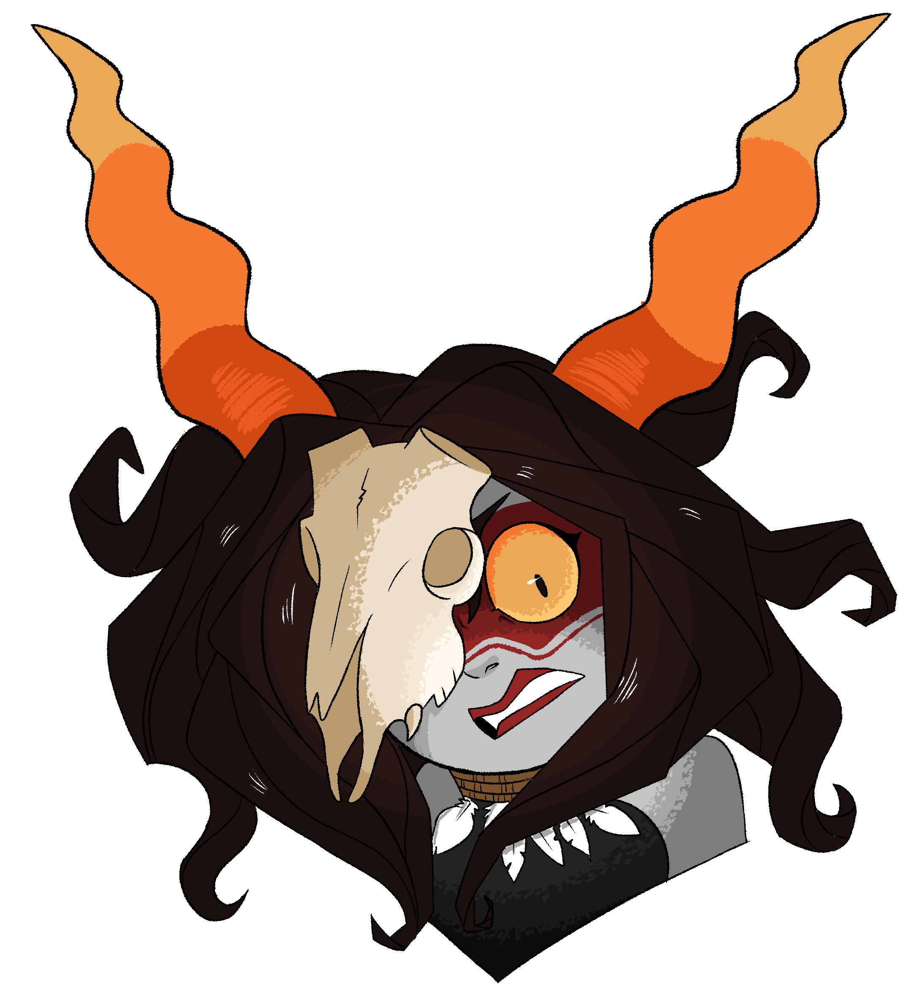

La Brujota
Bio
La Brujota, whose real name has been long lost to time, is the mentor of Cabría Dionis and Amares Aelius doubling as the latter's ancestor. She is a powerful and feared witch thought to have died centuries ago but rumored to be immortal. Though she has an extensive knowledge of all magical arts, she specializes in the creation of poisons and curses, a holdover from her formative years as a young witch. Despite her formidable reputation, she is a solitary figure who prefers to live deep in a swamp located in the woods, surrounded by nature and her fellow witches. She is a strict teacher who demands perfection from her students and seems deeply disappointed when they take a different direction from the path she went down.
Appearance
La Brujota is a formidable figure with a striking appearance. She has long, tangled knotted dark gray hair which holds any manner of strange objects such as sticks, leaves, and even insects, her slightly darker gray skin is telling of her age and is covered in a myriad of strange markings and scars. Her yellow eyes are deep-set and piercing with a glint of otherworldly power striking fear into the hearts of onlookers. Her horns are a bit larger than Amares' but retain their characteristic tight spirals. She wears dirty tattered robes adorned with bones, feathers, and other symbols of her craft.
Powers and Skills
La Brujota has a an extensive knowledge over all forms of magic
Personality
La Brujota is a complex and enigmatic character, possessing a rough and uncaring nature that belies a deep and powerful inner strength. She is fiercely independent and confident, with a sharp tongue that often borders on antagonistic towards those who don't mindlessly follow or look up to her. She has a vast knowledge of magic and the supernatural, and her experience with spirits makes her an expert in divination and prophecy. Despite her gruff exterior, La Brujota cares deeply for Cabría, treating her like her own daughter and even allowing her to take on her surname and symbol. She's a bit hard on Cabría, but her affection can be seen by those with a trained eye. La Brujota also has a soft spot for Amares to some extent, although she's disappointed with her kind nature and thinks of Cabría as her rightful heiress. La Brujota's connection to spirits runs deep, unlike Amares she has actually been able to communicate with them since she was a child, however they were the same spirits as the ones Amares would later speak to. She would ask them for guidance and knowledge about the future, living life the easy way like Amares but one day she messed up, she asked the ghosts how and when she'd die, they believed it harmless as it was IMPOSSIBLE to change fate regardless of how hard you try so they told her, this information made her sick, she hated it, she didn't want to die but she knew she could do nothing about it. That didn't stop her from trying, she devoted her life to it at first she hid her research and only asked them seemingly innocent questions only asking advice from them in a way where they did not know what she was planning but after a while they connected dots and demanded she stop, she didn't she had kept going hoping to find ways to break free from the fate that seemed to be closing in on her.